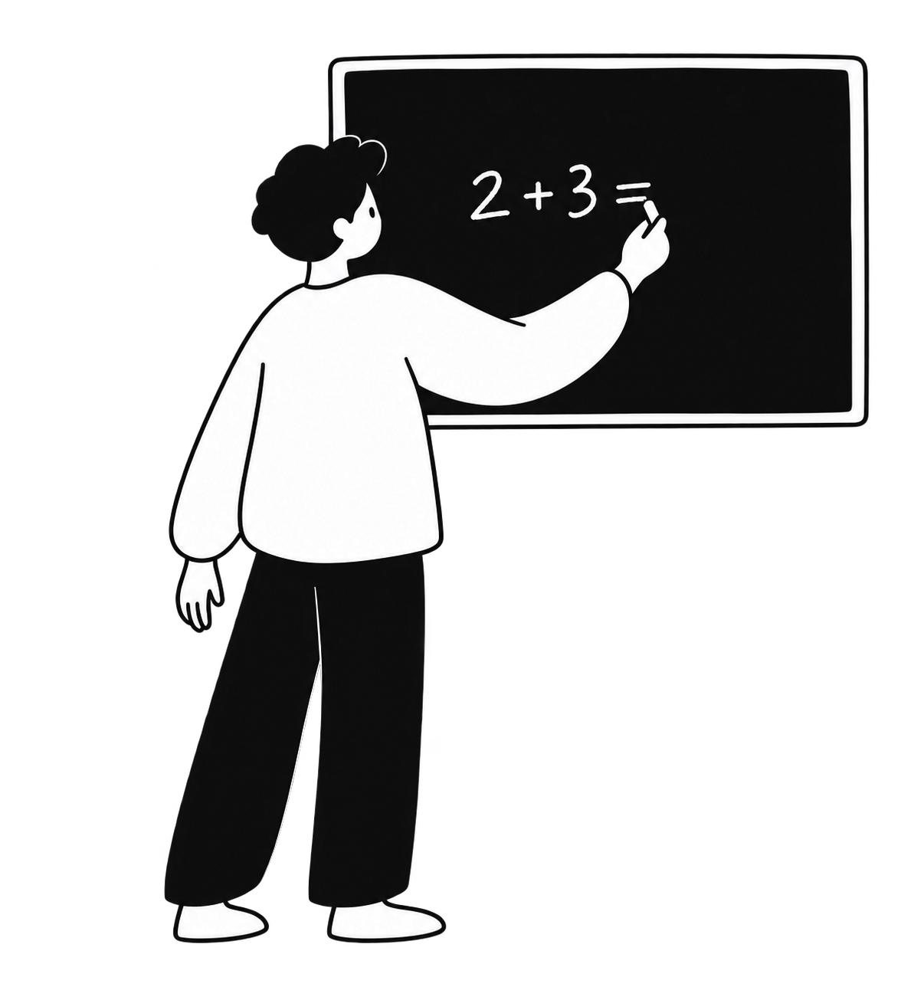
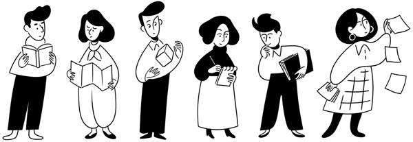

NOTION HANDDRAWN STUDIO / 2026-10-12 / 本地 v1.3.0
先统一人物大形，再检查动作是否成立。
两例新图都减少了细节、采用宽缓整体形状；精确接触仍不稳，线条也偏光滑。此次是改进版，尚不能宣称稳定。用户审美验证：待进行。
这次改了什么
人物共用一段可直接执行的造型基准，跨主题只更换主体、动作与构图。先组织宽缓平面大形，再留下解释接触所必需的内部线。分别检查外轮廓、内部细节、动作接触；首图与修图结果分开保留。Logo 与小装饰规则保持原版。
首图对比 · 不用修图覆盖首次结果
自评结果
| 检查项 | 黑板新首图 | 浇花新首图 |
|---|
| 大形抽象、内部减法 | 本轮目标基本达到 | 本轮目标基本达到 |
| 动作与提示细节 | 粉笔接触未通过 | 浇花可读；落入盆土未严格实现 |
| 官网风格接近程度 | 仍偏光滑、圆润；不以“细节少”代替用户对风格的判断 |
| 真实透明背景 | 已检查 alpha 与白／灰底预览 | 已检查 alpha 与白／灰底预览 |
| 用户评价 | 待验证 | 待验证 |
一次局部修正 · 仍保留未解决项

只修粉笔与握持局部。粉笔方向更接近笔画，但放大仍存在小间隙，接触项继续标为“需要调整”。停止本轮重试，未把编辑结果计作首图成功。
人物大形、题目与布局基本保持；这不是像素级无损编辑，图高从 1304 变为 1305。
编辑 PNG ·
实际编辑提示词与参考还差在哪

C293 · Notion 官网人物参考，仅用于风格观察，非本项目原创。
新图更概括，但轮廓仍较均匀，人物比例与转折尚未完全呈现参考中轻微夸张、自然不对称的感觉。两例观察不足以估算成功率，也不能排除随机生成差异。
实际方式：查看 C293、C296 后转成文字。两个新图都没有给生成器传入图片；修图只传入黑板首图。没有使用 H01–H04 用户留出题。
供你本轮判断
重点看两个人物的袖臂、手脚与整体比例：这种“简化程度”是否接近目标，还是仍过圆、过规整。你的评价会单独记录，不把无回复视为通过。
Skill 文件 · Skill 安装包 · 完整自评 · 生成记录 · 图片文件检查 · 结构检查
内置 image_gen：2 次独立生成 + 1 次局部编辑。所有原始输出和实际提示词已保留。本版已归档到 GitHub；用户审美验证仍待进行。